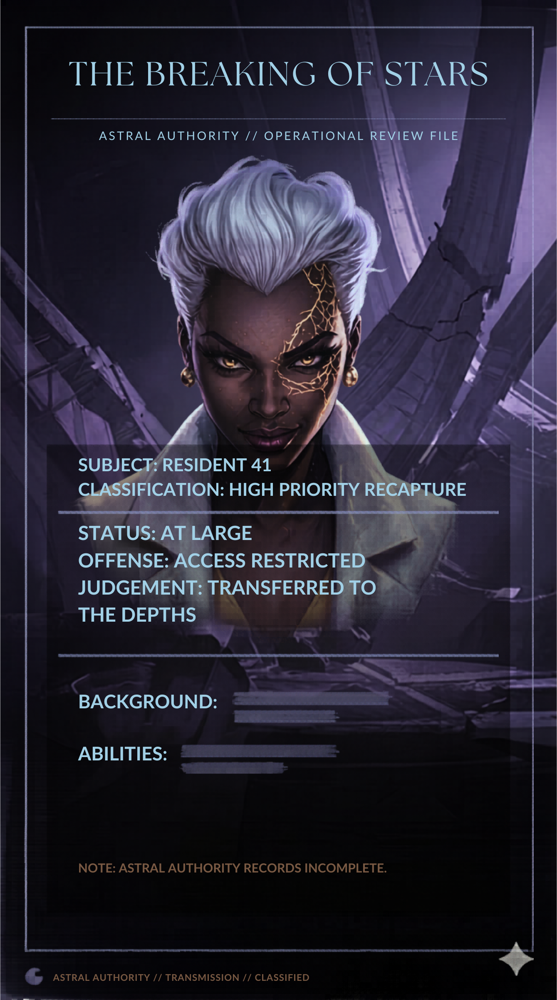
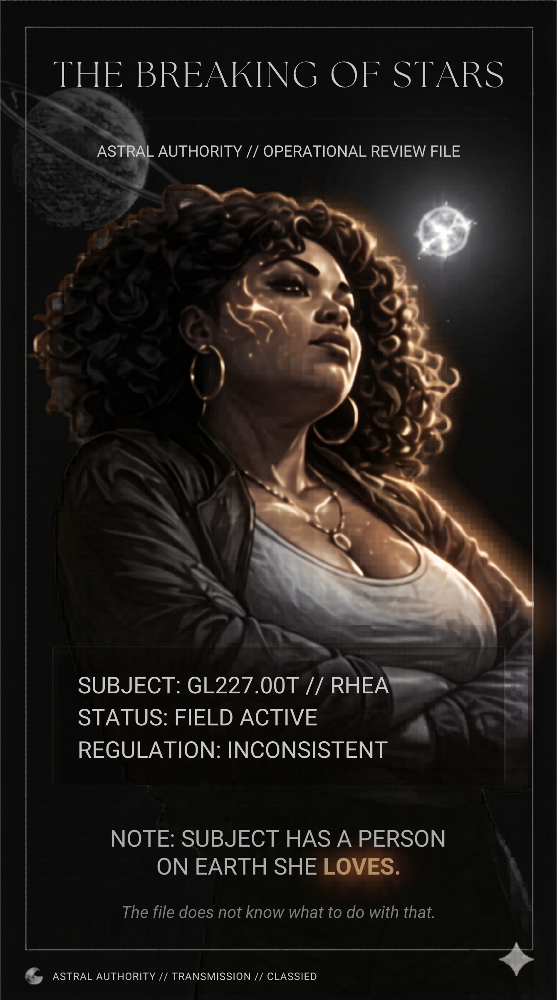
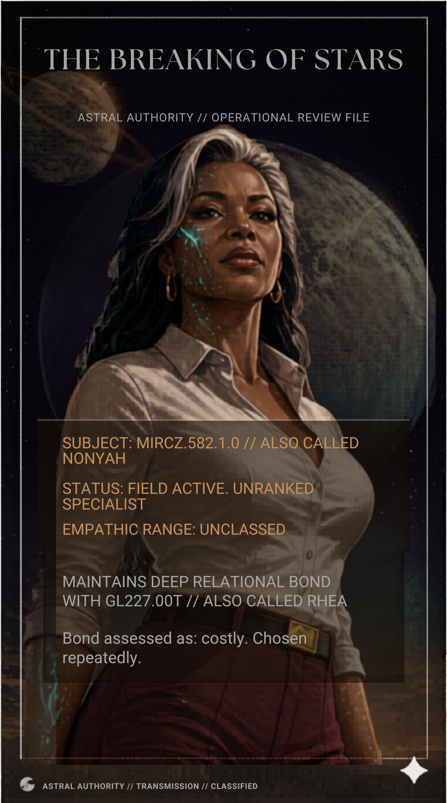
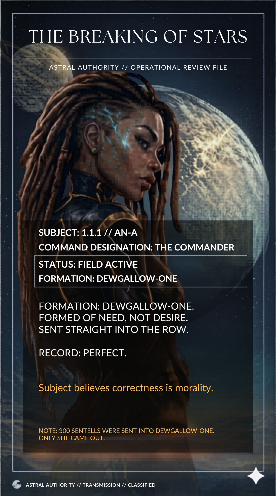

The Breaking
of Stars
How can three guardians stop a prisoner capable of destroying Earth when their own authority refuses to tell them what they're up against?
Three alien operatives. An escaped prisoner. A mission compromised by the institution that assigned it.

The threat is real.
The briefing is not complete.
An original character-driven science-fiction novel from She-Sci.
Three alien operatives are assigned to stop an escaped prisoner whose mission is to destroy Earth.
Resident 41 possesses knowledge and abilities the guardians don't understand. Worse, the Astral Authority—the institution that sent them—is withholding information about the threat.
The Commander is loyal to the Authority and considers the two operatives under her command inadequate and expendable.
Nonyah, who senses the emotional turmoil beneath An-A's behavior, remains determined to help her. Rhea, who shares a deep bond of trust with Nonyah, has no tolerance for the commander's destructive self-interest.
As the hunt intensifies, they must confront an enemy they barely understand, an institution they cannot fully trust, and a command structure threatening to fracture the mission from within.
They've been ordered to stop her. They haven't been told what she's capable of.
The classified files
Four subjects. Incomplete records. The Authority's version of the truth.




The official files don't tell the whole story.
The official files don't tell the whole story.
Discover what happens when three guardians confront a threat their own Authority refuses to explain.
Ebook only · No print edition planned · Price, retailer, and reading formats to be confirmed